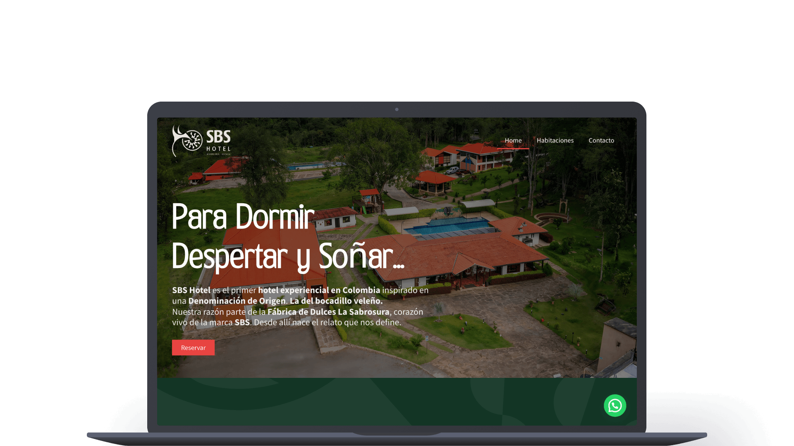
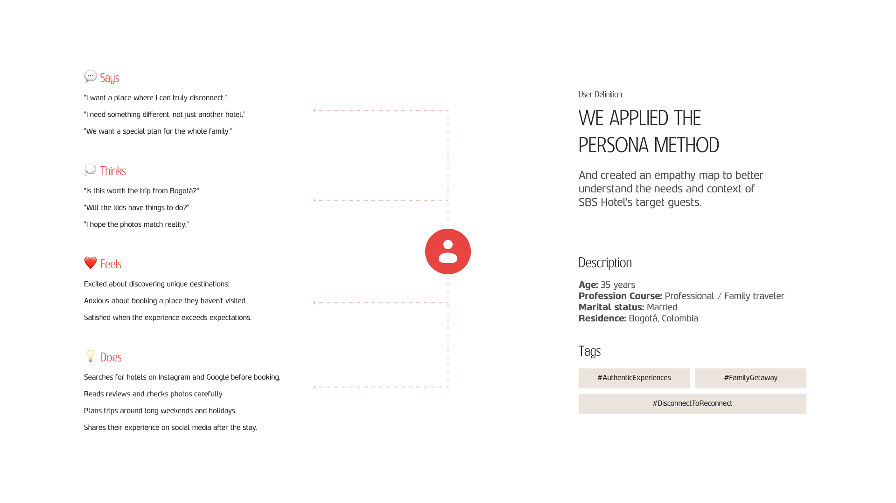
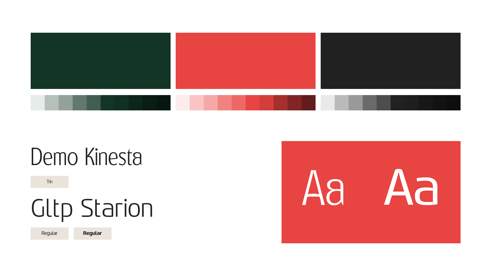
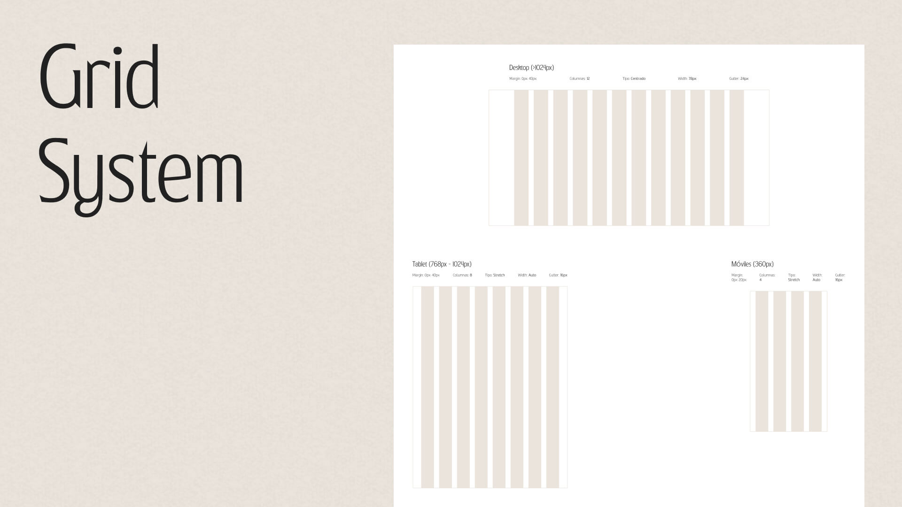
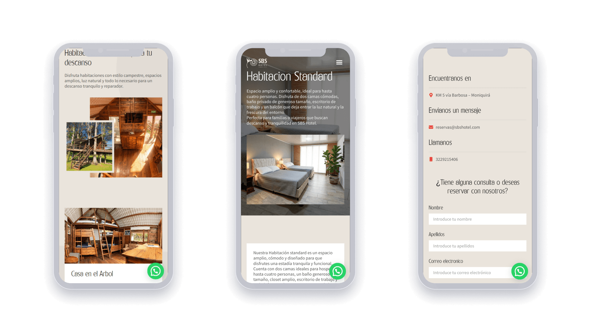
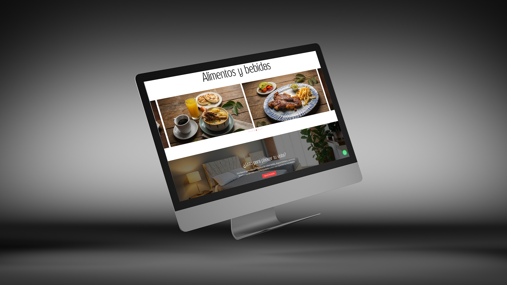

SBS Hotel
A website for Colombia's first experiential hotel inspired by a Denomination of Origin.

SBS Hotel is the first experiential hotel in Colombia built around a Denomination of Origin — the bocadillo veleño. Located in Moniquirá, Boyacá, it connects guests with the authentic culture and landscape of the region through curated rooms, natural spaces and a story rooted in Fábrica de Dulces La Sabrosura.
Goal
Design and build a website that translates the hotel's unique storytelling into a digital experience — conveying warmth, authenticity and trust to potential guests while driving reservations through a clear and inviting browsing journey.
My role
I led UX research and UI design for the full website, and developed it on WordPress using Elementor. From understanding the target guest and defining the visual direction, to building every page and taking the site to production.
Audience
SBS Hotel's primary guest is a Colombian family or couple from a major city — most often Bogotá — looking for an authentic escape from urban life. They value nature, comfort and unique experiences over generic tourist packages.
Families — parents traveling with children who need spacious accommodation, outdoor activities and a safe, welcoming environment. They plan ahead and rely heavily on photos and reviews before booking.
Couples — looking for a romantic, intimate getaway with privacy and comfort. The Superior rooms with jacuzzi and the treehouse are designed directly for them.
Understanding both profiles meant the website needed to communicate warmth and authenticity immediately, answer key questions without friction, and make the reservation process as simple as possible.

Research
Before designing anything, I looked at how people discover and evaluate boutique hotels in Colombia. I reviewed competing destinations in the Boyacá region, studied how guests navigate hotel websites before booking, and worked with the SBS team to understand what made their property genuinely different.
Key findings that shaped the design:
- Guests decide within the first scroll whether a hotel feels worth the trip — the hero section had to communicate the experience immediately, not just show a logo.
- Room variety and pricing need to be visible and easy to compare — unclear pricing is one of the top reasons users abandon hotel websites.
- The bocadillo veleño story was SBS's biggest differentiator — no other hotel in the region had a concept rooted in cultural heritage. This needed to lead the narrative.
- Most visitors browse on mobile — every layout decision was made with a phone-first mindset.
- Social proof (testimonials, photos of real spaces) had more impact than descriptive text alone.
Visual explorations
The visual challenge was balancing rustic warmth with a polished, trustworthy feel. A website that looked too rough wouldn't convert bookings. Too generic and it would lose the soul of the property.
I explored directions ranging from earthy and artisanal — leaning into the bocadillo heritage with warm beiges and handcrafted textures — to a cleaner, more editorial approach that let the photography do the heavy lifting. The final direction landed between both: warm typography and a beige/cream palette that feels organic, paired with full-bleed imagery that puts the spaces front and center.
The room catalog section went through several iterations — card layouts, list views, full-width alternating blocks — before settling on a clear, scannable structure that shows the key information (capacity, price, highlights) without overwhelming the visitor.


Final design
The final website opens with the hotel's story front and center — "Para dormir, despertar y soñar" — setting the tone before the guest sees a single room. From there, the browsing journey flows naturally: what the hotel is, what spaces are available, what guests say, and how to book.
The room catalog covers five distinct accommodation types — Standard, Superior, Casas Turísticas, Casa Blanca and Casa en el Árbol — each with its own detail page covering capacity, amenities and pricing. This structure makes it easy for different guest profiles to find their fit quickly.
The site was built on WordPress with Elementor, giving the SBS team full control to update content, photos and pricing without needing a developer. The reservation flow connects directly to WhatsApp, matching how the hotel already manages bookings with its guests.


Learnings
Working on a hospitality project reinforced something I already believed: in tourism, emotion drives the decision before logic does. People don't book a hotel because the website listed all the amenities correctly — they book it because they could picture themselves there. Getting the photography and the hero section right was more impactful than any other design decision on the page.
Building for a client who needed to manage their own content also pushed me to think more carefully about the system behind the design. A beautiful page that the client can't update becomes a liability. Designing with Elementor's constraints in mind from the start saved a lot of friction during handoff.
See the result ↗